10 Spatial Interaction Modelling
10.1 Introduction
Aims
The aims of this practical are to:
- Understand the aims and common applications of spatial interaction (gravity) models.
- Understand the design and calibration of spatial interaction models.
- Apply spatial interaction models to a contemporary sociological issue.
Application
To that end, we’ll develop spatial interaction models to predict internal migration flows between local authorities in England and Wales.
Data
All data for this practical have been sourced from the Office for
National Statistics (ONS) at the local authority level and are found in
[data/ons/local-authority] as follows:
Tools
Feature To Point (Data Management Tools), Generate Near Table (Analysis Tools), Generalized Linear Regression (GeoAnalytics Desktop Tools), Notebooks in ArcGIS Pro, Calculate Geometry Attributes (Data Management Tools)
10.2 Practical
10.2.1 Understanding Spatial Interaction Models
In 1687, Isaac Newton published Philosophiæ Naturalis Principia Mathematica54, arguably the most important scientific work in history:
Alongside the laws of motion, the Principia included Newton’s law of universal gravitation, which describes the force of gravity acting between objects. It was later formalised as follows:
\[F = G\frac{m_{1}m_{2}}{r^{2}}\] where \(F\) is the force between objects, \(m_{1}\) and \(m_{2}\) are the masses of the objects, and \(r\) is the distance between them. \(G\) is the Newtonian constant of gravitation, defined as \(6.674 \times 10^{-11}\; m^{3}\cdot kg^{−1}\cdot s^{−2}\) and first measured by Henry Cavendish in 1797 (Lally, 1999).
This law states that the force of gravity is proportional to the objects masses (\(m_{1}m_{2}\)) and inversely proportional to the square of the distance between them (\(r^{2}\)) i.e., as the masses of the objects increases, the force of gravity increases. As the distance between the objects increases, the force of gravity decreases.
While other laws are needed in certain settings (e.g., Einstein’s theory of general relativity), Newton’s law of universal gravitation can be used to measure the force between planets and galaxies, the impact of mountains on nearby objects, or even an apple falling from a tree.
This is all very interesting (I hear you say) but what does it have to do with spatial analysis, and how is this relevant to spatial interaction models, the topic of today’s practical?
Spatial interaction models (SIMs), of which the most widely used form is the gravity model, are analogous to Newton’s law of universal gravitation. However, rather than predicting the force of gravity \(F\) between objects, gravity models (and SIMs more widely) are used to predict flows between locations e.g., the flow of people, materials, money or information between origins and destinations.
A classic form for the gravity model is provided below, which you’ll notice is conceptually and mathematically similar to Newton’s law above:
\[T_{ij} = k \frac{V_i^μ W_j^α}{d_{ij}^{\beta}}\]
We’ll define each of the terms in a moment, but the gravity model states that flows between an origin and a destination (\(T_{ij}\)) are proportional to the product of the masses of the origin and the destination (\(V_{i}W_{i}\)) and inversely proportional to the distance between them (\(d_{ij}\)).
Let’s take a simple example of migration between countries. Intuitively, if countries have millions or billions of people (e.g., China, India, United States, Indonesia, Pakistan, …), we would expect there to be a larger flow of people between the countries, compared to the flow between countries with only a few thousand people (e.g., Tuvalu, Nauru, Palau, …). Similarly, we might expect migration to be greater for neighbouring country pairs (e.g., France → Germany) and smaller for distant country pairs (e.g., France → Japan). In reality, patterns of migration might also be explained by additional drivers e.g., shared language, cultural similarity55, wealth inequality, to name a few.
Returning to our model:
- \(T_{ij}\) is the predicted flow (of people, money, information, …) between origin \(i\) and destination \(j\), analogous to \(F\).
-
\(V_i\) is a vector of origin attributes which relate to the
emissiveness of all origins \(i\) i.e., the capacity of a location
to send out flows. For example, if modelling flows of people, this
could be the population of the origin country.
- \(W_j\) is a vector of destination attributes which relate to the attractiveness of all destinations \(j\) e.g., the employment opportunities or social provision of a destination country.
- \(d_{ij}\) is a matrix of costs between origins and destinations (\(ij\)) e.g., the distance, cost or travel time between countries.
The gravity model also includes a number of parameters which need to be estimated: \(k, μ, α, \beta\).
We’ll discuss these parameters more fully later in the practical, but broadly these control the importance of the variables they are associated with. As an analogy, in Newton’s law of universal gravitation, the inverse square of the distance is used (\(r^2\)). For example, if objects move to be twice as far apart, the force of gravity would be a quarter of its original strength, rather than a half, if \(r\) was used. Similarly, the \(\beta\) parameter controls the importance of cost in our model. As \(\beta\) increases, the cost associated with distance would also increase, and predicted flows would decrease, independent of \(V_i\) and \(W_j\).
Overall, the gravity model defined here, adapted from physics, states that as the emissiveness of the origin (\(V_i\)) and the attractiveness of the destination (\(W_j\)) increase, the predicted flow (\(T_{ij}\)) will increase. In contrast, as origin-destination costs (\(d_{ij}\)) increase, predicted flows will decrease.
We can use these models for prediction e.g., what might happen to flows of people as the population and wealth of countries change in future?
They can also be used to inform our understanding e.g., what are the key factors which influence international migration?
In today’s practical, we are going to develop our own gravity models to
predict internal migration flows between local authorities in England
and Wales. Relevant academic works include Dennett and Wilson (2013) and Rowe et al. (2024).
For those interested in other implementations, the R spatial
interaction walthroughs
provided by Adam Dennett and the functionality available in the R
package simodels (Lovelace and Nowosad, 2025) were used to guide development of
this practical.
10.2.2 Pre-processing
To begin:
Open ArcGIS, initialise a new project in the
practical-10directory, establish a connection todataand loadLAD_DEC_2021_GB_BFC.shp, which contains the geometries for Local Authortiy districts in Great Britain.
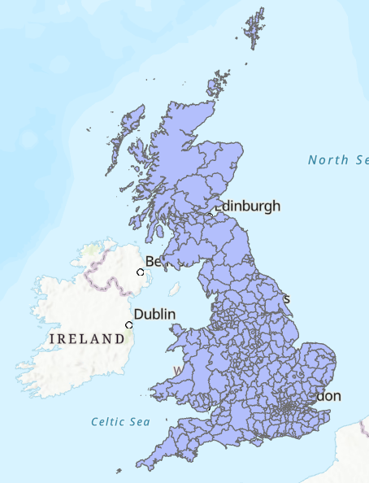
One of the key components of the gravity model is \(d_{ij}\), which represents the costs between origins and destinations. In our case, we will use the Euclidean (straight-line) distance between local authority centroids:
Use the Geoprocessing tool Feature To Point to generate centroids for each feature, using the output name
LAD_point.
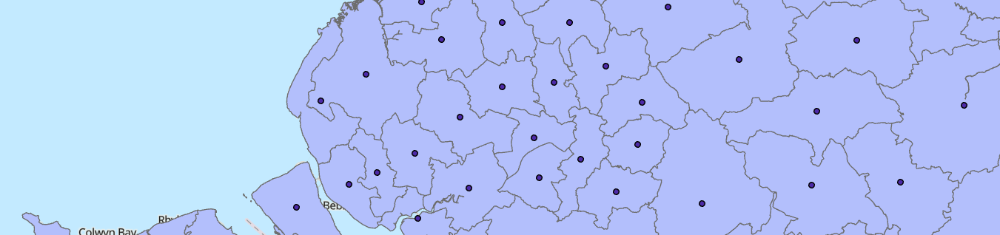
There are lots of methods we could use to generate a representative Point for each Polygon feature. For example, we could use the centre point of the bounding geometry for each feature, calculated using Minimum Bounding Geometry. We could also simply calculate the average of all the point coordinates that comprise the Polygon boundary.
Feature To Point calculates the geometric centroid (i.e., center of mass) for each feature. For irregularly shaped or multipart features, the centroid can sometimes fall outside the Polygon boundary.
Investigate this for
E06000053, the Isles of Scilly.
You’ll also notice that the ONS data already includes some additional
geometry information, as BNG_E,BNG_N and LONG,LAT.
Use XY Table to Point to generate an additional Point dataset, saved as
LAD_ons_point. Use eitherBNG_EandBNG_NORLONGandLATand make sure to select the correct Coordinate System.
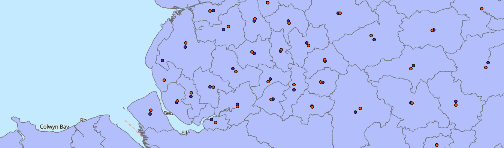
Feature To Point (blue) and those provided by
the ONS
(red)The differences between these methods are generally
small56 and given we are using the modelled
Points to calculate an approximate distance between local authorities,
rather than actual travel paths (for example), we can be justified in
using the Feature To
Point output LAD_point.
To finalise this choice:
Use Calculate Geometry Attributes, with
LAD_pointas the “Input Features” and store the x-coordinates and y-coordinates of each Point asBNG_eastandBNG_northrespectively. Here we are using longer field names to distinguish these fields from those provided by ONS (BNG_E,BNG_N).
Now that we have a representative Point for each local authority district, and the corresponding coordinates in the Attribute Table, we can produce \(d_{ij}\), our matrix of costs between all origins and destinations.
Use Generate Near Table with
LAD_pointas both the “Input” and “Near Features” and uncheck “Find only closest feature”. Use a suitable output name (e.g.,LAD_point_neartable). Please save in thepractical-10geodatabase, rather than the project directory, to facilitate later editing.
In Generate Near
Table,
we used the Planar method for distance calculation. Why is this
appropriate?
Inspect the Near Table, which contains the feature IDs for the origin (
IN_FID) and destination locations (NEAR_FID) and the corresponding distances.
What are the units for the distance measurements? Why are they being used?
Our Near Table contains \(d_{ij}\), but no other information, including the geometries of the features (for plotting) or attributes for each origin and destination, which we will need to model emissiveness and attractiveness. To address this:
Load the gross domestic product (
ons-la-gdp.csv) and population tables (ons-authority-population.csv) into ArcGIS and use Join Field to link these data to our local authority centroids (LAD_point), joining based onLAD21CDandla_code. For Transfer Fields, we are only interested in thegdpandpopfields from each dataset.
Our next step is to join these fields to the corresponding origins and destinations in the Near Table.
Open Join Field, using
LAD_point_neartableas the “Input Table” andIN_FIDas the “Input Field”, joining to theLAD_Pointtable viaFID. Use “Field Mapping” to select the following fields and update the field names to indicate they are related to the origin location (orig_):
orig_LAD21CD: Unique IDorig_LAD21NM: Nameorig_gdp: Gross domestic product (£) per capitaorig_pop: Populationorig_BNG_east: British National Grid easting, produced using Calculate Geometry Attributesorig_BNG_north: British National Grid northing, as above
Repeat this process, but this time linking to the destination location by updating the “Input Field” to
NEAR_FIDand updating the field names accordingly i.e.,dest_.
When complete, the Near Table should contain all the required origin and destination fields:
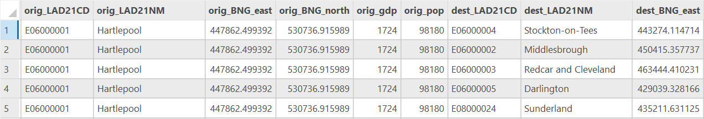
This is great and we could start to plug some of the above values into our gravity model to predict migration e.g.,
\[T_{ij} = k\frac{\text{Origin Population}_{i}^μ\times\text{Destination GDP}_{j}^α}{\text{Distance}_{ij}^{\beta}}\]
However, without empirical data, we would be unable to calibrate our models or test their performance.
Luckily, the ONS provides data on internal migration flows for England and Wales, summarising the flows of people into and out of each local authority. We’ll be using data from 2021 to match the census date of the population and GDP datasets.
Load the ONS internal migration data
ons-internal-migration.csv. Here,flowrepresents the number of modelled residential moves (i.e., change of address) between each local authority. This dataset excludes any moves within local authorities, international moves, or those to Scotland or Northern Ireland. For the modelling approach, see here.
What is the total number of internal migrations?
Which local authority received the largest inflow from a single other local authority?
You’ll notice that ons-internal-migration contains the orig_dest
field, which I’ve created to summarise the origin-destination path in a
single attribute. To link the flow data to our Near Table, we are going
to create an equivalent field in the latter:
Using “Calculate Field” in the Near Table to create an origin-destination field (e.g.,
orig_dest, “Field Type” =Text) using the following expression:!orig_LAD21CD! + "-" + !dest_LAD21CD!.
Use Join Field for the final time, joining the internal migration table to the Near Table using
orig_dest, and transferring theflowfield. Note this may take some time…
As a final step before we can enjoy some data exploration and modelling, it is worth doing some data cleaning:
Remove all rows where
flowis<Null>. This excludes local authorities whether is no empirical flow data for calibration (i.e., Scotland), and should result in ~87,000 rows.
10.2.3 Data exploration
Before we begin modelling, it is always worth performing some exploratory data analysis.
Using “Visualise Statistics”, how would describe the distribution of internal migrations by local authority?
Using “Summarise”, which local authority received the largest total inflow?
Which local authority provided the largest total outflow?
It may also be useful to visualise some of the internal migrations. Unfortunately we can’t do this for all bilateral connections without causing ArCGIS stress, so instead:
Use Select by Attributes to select local authority pairs where
flow> 1000. Use XY to Line to generate lines connecting the centroids, using the relevantoriganddestcoordinates, selecting the appropriate CRS and making sure to “Preserve attributes”. Modify the symbology to improve your understanding e.g., modifying line size byflow.
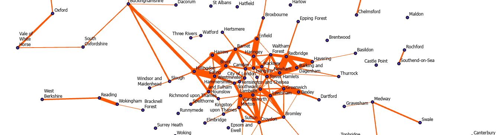
When you’ve finishing exploring, remove this dataset from ArcGIS. You may also want to visualise flows to and from a specific local authority e.g., Manchester =
E08000003.
Finally, it is worth investigating the relationships between the local authority attributes.
Use Create Chart - Scatter Plot to investigate the links between
flowand the other fields.
Are there any interesting or promising correlations?
To finish:
Remove all the original data tables:
ons-la-gdp,ons-authority-population.csv,ons-internal-migrationto avoid confusion.
10.2.4 Model description
As a reminder, we’ll be using a classic gravity model:
\[T_{ij} = k \frac{V_i^μ W_j^α}{d_{ij}^{\beta}}\]
where \(T_{ij}\) is the predicted flow between origin \(i\) and destination \(j\), \(V_i\) is a vector of origin attributes which relate to the emissiveness of all origins, \(W_j\) is a vector of destination attributes which relate to the attractiveness of all destinations \(j\), \(d_{ij}\) is a matrix of costs (distance) between origins and destinations (\(ij\)), and \(k, μ, α, \beta\) are model parameters that need to be estimated.
This equation can also be written as follows, as described by Wilson (1971), which is mathematically identical but removes the fraction, so is simpler to handle:
\[T_{ij} = kV_i^μ W_j^αd_{ij}^{-\beta}\]
As outlined above, the key parameters that need to be estimated (\(k, μ, α, \beta\)) control the importance of the variables they are associated with i.e., as \(\beta\) increases, the cost associated with distance increase, and predicted flows would decrease, independent of \(V_i\) and \(W_j\). At this stage we don’t know how to select those parameters, so we can start with a basic set where effects scale linearly e.g., a 1 unit increase in population might equate to a 1 unit increase in the modelled flow from that origin. Newtons universal law of gravitation uses a power law of \(\beta=-2\), so here are the starting values:
\[k=1, μ=1, α=1, \beta=-2\] For \(V_i\) (origin “emissiveness”), we will
use origin population (orig_pop) and for \(W_j\) (destination
“attractiveness”), we will use destination GDP per capita (dest_gdp)
i.e., as the population of the origin increases and the GDP per capita
of the destination increases, we would expect a greater flow of people.
For \(d_{ij}\), we’ll use distance in kilometers (NEAR_DIST / 1000)
where the reverse effect is expected i.e., as distance between local
authorities increases, we would expect a smaller flow of people.
10.2.5 Unconstrained and Total-constrained models
ArcGIS does not provide dedicated tools for spatial interaction models, so we’ll be conducting most of our modelling using “Calculate Field”.
To begin:
In the Attribute Table, use Calculate Field to generate a new field
gm1i.e., our first gravity model (“Field Type” =Double). The expression is as follows:pow(!orig_pop!, 1) * pow(!dest_gdp!, 1) * pow(!NEAR_DIST! / 1000, -2), where distance is converted from metres to kilometers. The functionpow()raises the chosen object to the specified power, in this case \(1\) or \(-2\).
More simply, this is:
\[\text{Modelled Flow} = \text{Origin Population}^{1} \times \text{Destination GDP}^{1} \times \text{Distance}^{-2}\]
Inspect the Attribute Table, which should contain the modelled values for
gm1.
We would describe this as an unconstrained model because the values are unitless and they have been produced independently of any empirical flow data.
A more useful output is to ensure the sum of our modelled flows (gm1)
matches the sum of the empirical flows (flow). This is achieved by
scaling our modelled flows using the \(k\) parameter, which you’ll notice
was absent from our equation above. In turn, we would refer to our
output as a total constrained model i.e., the modelled total has
been constrained to the empirical total, with the scale factor \(k\)
calculated as follows:
\[ k = \frac{\text{Sum of empirical flows}}{\text{Sum of modelled flows}}\]
Use “Explore Statistics” to find the sum of
flowandgm1. Then use “Calculate Field” to generate a new field (gm1_scale), where the output is our original modelled valuesgm1multiplied by the scale factor.
When complete, we can check our model is total constrained by
comparing the sums of flow and gm1_scale using “Explore Statistics”.
We have produced our first model, so let’s evaluate it.
Create a Scatter Plot for
flowandgm1_scale.
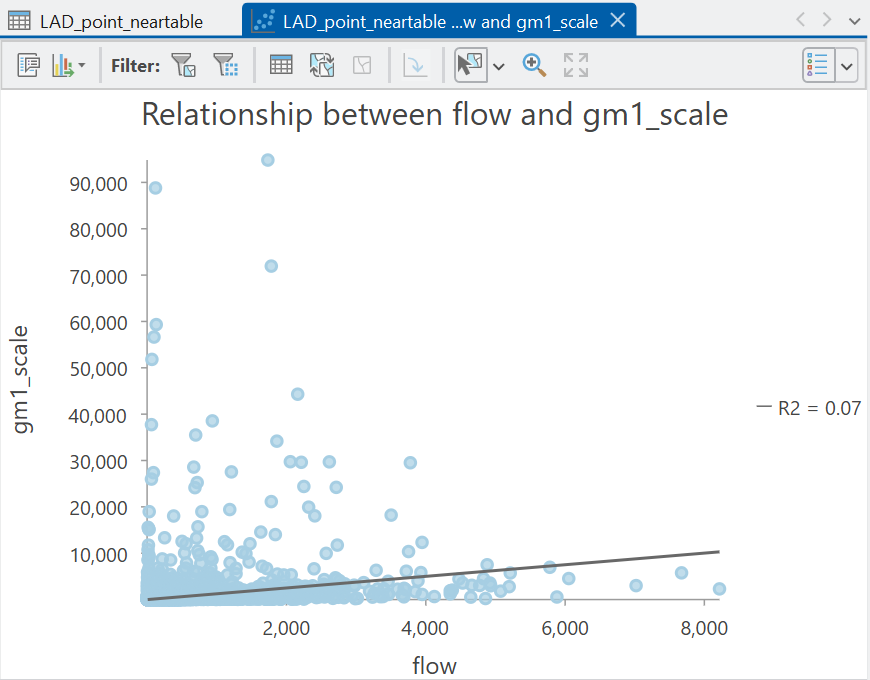
What is your appraisal of model performance?
What are some limitations of our approach?
Answer
I think you’ll agree, the performance is pretty absymal here (\(R^2=0.07\)). Our model is capturing less than 10% of the variability in empirical flows. One reason for this is we haven’t tuned our parameters \(k, μ, α\) or \(\beta\).
10.2.6 Tuning parameters
To tune our parameters \(k, μ, α\) and \(\beta\), a common approach is to develop separate models to explain the observed (empirical) migration data, and use the related model coefficients as our parameters.
10.2.6.1 A log-normal approach
Historically this would be achieved by taking the logarithm of both sides of our equation:
\[\log(T_{ij}) = \log(kV_i^μ W_j^αd_{ij}^{-\beta})\]
This can also be written as follows, which converts multiplication into addition, and powers into coefficients:
\[\log(T_{ij}) = \log(k) + μ\log(V_i) + α\log(W_j) - \beta\log(d_{ij})\]
For those interested, this is produced by the laws of logarithms. For example, \(\log(a) + \log(b) = \log(ab)\). Applying this to our equation yields:
\[\log(T_{ij}) = \log(k) + \log(V_i^{μ}) + \log(W_j^{α}) + \log(d_{ij}^{-\beta})\]
Another law is that \(\log(a^x) = x\log(a)\). Applying this to our equation yields:
\[\log(T_{ij}) = \log(k) + μ\log(V_i) + α\log(W_j) - \beta\log(d_{ij})\] As the exponent for distance is negative (\(-\beta\)), the coefficient is also negative: \(- \beta\log(d_{ij})\).
The important thing to note here is that the form of this equation should be familiar to you: it is effectively a regression model, as covered in Practical 7. For example, take the equation for a multiple linear regression:
\[ Y = \beta_{0} + \beta_{1}X_1 + \beta_{2}X_2 + \cdots + \beta_{n}X_{n}\]
where \(Y\) is the dependent variable, \(\beta_{0}\) is the intercept term, and \(\beta_{n}\) is the slope coefficient associated with independent variable \(X_n\). This is the same structure as our logged gravity model above.
Using this approach, we can produce a regression model to predict our
empirical flow data \(Y\), minimising the sum of the squared residuals
between empirical \(Y\) and predicted \(Y\), where the latter is produced
using the independent variables \(X\), which are our chosen inputs to the
gravity model i.e., orig_pop, dest_gdp. The slope coefficients
produced by this model (\(\beta_{n}\)) can be used as our parameters for
our gravity model e.g., \(\beta_{0}=k\).
To summarise, our parameter values are calibrated or tuned to provide the best fit with the empirical flow data.
10.2.6.2 A Poisson approach
Unfortunately, there are a number of issues with a log-normal approach, which are outlined in detail by Flowerdew and Aitkin (1982). For example, this approach will only work with positive flows, since \(\log(0)\) is undefined. The approach also produces predictions of \(\log(T_{ij})\), rather than \(T_{ij}\). While the latter can be estimated using antilogarithms, the effects are typically biased, with under-representation of large flows, and under-prediction of the total flow.
Instead, a more rigorous approach is to use Poisson regression which can handle both positive, negative and zero flows, but is also more appropriate for skewed data.
If you’ve not done so already, use “Visualise Statistics” to explore the distribution of
flow.
A Poisson distribution, named after French mathematician Siméon Denis Poisson, is often used to model discrete events e.g., whether someone migrates to a local authority or not, and is the probability of those events occurring in a fixed time interval, assuming:
- the events occur at a known average rate.
- the events are independent of the time since the last event.
The probability of \(n\) events in an interval is given as:
\[\frac{λ^{n}e^{-λ}}{n!}\]
where \(λ\) is the average rate of occurrence and \(e\) is Euler’s number.
Inspired by a Wikipedia example, there were 308 goals across 104 matches at the 2026 World Cup, giving an average of 2.96 goals per game. This is \(λ\), the average rate of occurrence.
Thus, the probability of \(n\) goals in a match for this value of \(λ\) is as follows:
\[P(n \;\text{goals in a match when} \: λ = 2.96)=\frac{2.96^{n}e^{-2.96}}{n!}\]
The probability of there being 0, 1, 2, or 5 goals in a match is therefore:
\[P(n = 0 \;\text{goals in a match})=\frac{2.96^{0}e^{-2.96}}{0!}=\frac{e^{-2.96}}{1}\approx0.052\] \[P(n = 1 \;\text{goals in a match})=\frac{2.96^{1}e^{-2.96}}{1!}=\frac{2.96e^{-2.96}}{1}\approx0.153\] \[P(n = 2 \;\text{goals in a match})=\frac{2.96^{2}e^{-2.96}}{2!}=\frac{8.76e^{-2.96}}{2}\approx0.227\] \[P(n = 5 \;\text{goals in a match})=\frac{2.96^{5}e^{-2.96}}{5!}=\frac{227.2e^{-2.96}}{120}\approx0.098\]
Using the above approach, we can plot a Poisson distribution for different average values \(λ\) across a range of probabilities \(n\), as shown here:
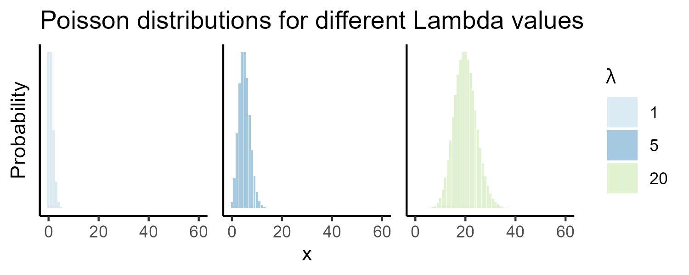
The important thing to note with a Poisson distribution is when the average rate of occurrence \(λ\) changes (e.g., \(λ = 1, 5, 20\)), this is reflected in the distribution, with increasing right skew with smaller values of \(λ\). This is unlike a normal distribution, which would look the same if the mean of the distribution was 10, 100, or 1000:
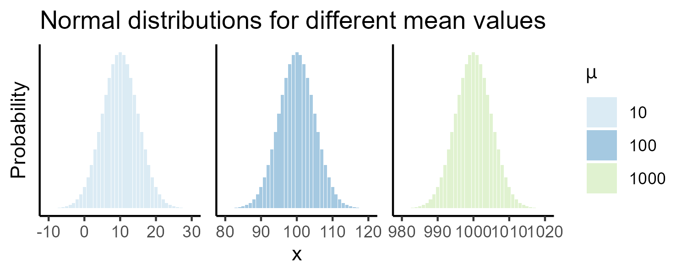
So that’s some background on Poisson distributions, which are more representative of our right-skewed flow data. How do we actually utilise this for our modelling?
When using a Poisson approach, we are assuming the following:
\[T_{ij} \sim Poisson(λ_{ij})\]
i.e., for an expected (modelled) flow \(λ_{ij}\) between an origin-destination, the actual observed flow \(T_{ij}\) is drawn from a Poisson distribution.
For example, let’s say the actual observed flow between two local authorities was 100 people. We’ll use \(n\) here to represent that, rather than \(T_{ij}\), for consistency with the equations above i.e., \(n = 100\). Now let’s say we have produced a Poisson model that predicts flow of 80 people between the two local authorities i.e., \(λ=80\). Using a Poisson approach, we want to ask:
Given our model predicts an expected flow of 80 people (\(λ\)), how likely is it that we observe 100 people (\(n\))?”
We can assess the probability using our equations above, substituting in our values for \(λ\) and \(n\) i.e., based on our model, we are expecting 80 people, how likely is the true value of 100 people?
\[P(n = 100 \; \text{when} \; λ = 80)=\frac{λ^{n}e^{-λ}}{n!} = \frac{80^{100}e^{-80}}{100!}\approx0.003939\]
In this case, the numeric probability is very small. For \(λ=80\), the probability is spread over many possible outcomes, with the highest probability at the the centre of the distribution:
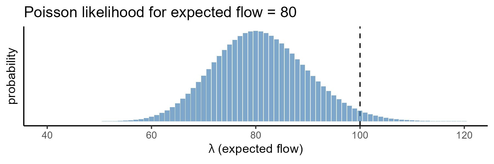
To assess the probability, as demonstrated above, we need some predictions of flow \(λ\), and these can be produced using Poisson regression. This is mathematically similar to the log-normal approach introduced earlier, but here we are not predicting flow directly, but are predicting the the mean of our Poisson distribution \(λ_{ij}\), using the same set of independent variables introduced above, and the corresponding model parameters \(k, μ, α\) and \(\beta\):
\[\log(λ_{ij}) = \log(k) + μ\log(V_i) + α\log(W_j) - \beta\log(d_{ij})\] If we take the exponent of both sides of the equation, we can model \(λ_{ij}\) directly:
\[λ_{ij} = \exp(\log(k) + μ\log(V_i) + α\log(W_j) - \beta\log(d_{ij}))\]
Unlike a log-linear approach, we are not seeking to minimise the numeric difference between predicted and observed flows, but are seeing to maximise the overall probability across all our predictions i.e., a maximum likelihood approach.
For example, let’s say we have the following observed flow values \(n\) and some expected (modelled) flow values \(λ\), with the latter produced with some initial model parameters for \(k, μ, α\) and \(\beta\):
\[n = \begin{bmatrix} 100 & 50 & 70 & 80 & 60\end{bmatrix}\] \[λ = \begin{bmatrix} 95 & 70 & 82 & 75 & 61\end{bmatrix}\] The probability of observing \(n\) for each modelled value of \(λ\) is therefore:
\[P = \begin{bmatrix} 0.036 & 0.001 & 0.017 & 0.039 & 0.051\end{bmatrix}\] The product of these individual probabilities is our overall model likelihood \(L\), which in this case is a very small number57… \(L=0.00000000161903\).
Now let’s say we have created a new model with a different set of values for \(k, μ, α\) and \(\beta\), which will therefore produce a different set of modelled flow values \(λ\):
\[λ = \begin{bmatrix} 98 & 52 & 71 & 82 & 60\end{bmatrix}\]
The probabilities of observing \(n\) for each modelled value of \(λ\) is now higher, because they are closer to the (unchanged) observed values:
\[P = \begin{bmatrix} 0.039 & 0.053 & 0.047 & 0.043 & 0.051\end{bmatrix}\]
Our model likelihood \(L\) is still numerically very small but is now approximately \(134 \times\) larger than before, at \(L=0.00000021725004\).
Which of the two models do you prefer and why?
Answer
Our preference would be for the second model, as we have increased our likelihood \(L\) i.e., the observed data are more probable with this set of parameters. This process would be repeated until the maximum \(L\) is obtained.
To summarise, using Poisson regression, we generate expected flows \(λ_{ij}\) for each origin-destination pair. These expected flows are generated using different values for the model parameters, in our case \(k, μ, α\) and \(\beta\). For each set of parameters, and for each origin-destination pair, we can assess the probability of observing the empirical flow value given the expected (modelled) flow value58. The model likelihood \(L\) is the product of these probabilities for all observations i.e., how well does this particular set of parameters explain the observed flow? This process is repeated, trying different values for each of the parameters \(k, μ, α\) and \(\beta\) to maximise the overall model likelihood i.e., find the model parameters which make the observed data as likely as possible.
If there is anything you didn’t understand here, now is the time to ask!
10.2.6.3 Implementing Poisson regression
As ever, understanding the Poisson approach is the challenging part. Running a Poisson regression in ArcGIS is very simple, although we do need to do a little bit of data preparation.
As outlined above, the Poisson regression (and the alternative log-linear approach) uses the logarithms of our independent variables, which we can produce as follows:
Use Calculate Field to create new logged59 origin population, destination GDP and distance variables e.g.,
log_orig_pop(Double) =math.log(!orig_pop!). To simplify the calculations for distance, you may also want to covert to kilometers here i.e.,math.log(!NEAR_DIST! / 1000).
Poisson distributions are also used to represent discrete events
e.g., the number of goals in a football match, or the number of internal
migrants to a particular local authority. As a result, our decimal
flow values, produced by ONS modelling, are not valid inputs. Instead,
we need to use integer values, which can be produced as follows:
Use Calculate Field to create integer flow values (
flow_int, “Field Type” =Long) using theint()function.
With our data preparation complete, we can run a Poisson regression as follows:
Open the Geoprocessing tool Generalized Linear Regression. Note we must use the GeoAnalytics Desktop Tools version rather than the version in Spatial Statistics Tools, as the former allows us to use a standalone table as an input. Use
LAD_point_neartableas the “Input Features”, withflow_intas the “Dependent Variable” i.e., our observed data. For “Model Type”, usePoissonand for “Explanatory Variable(s)”, use logged origin population, logged destination GDP, and logged distance. Store the “Output Features” in the project directory with a suitable name and Run.
When complete, we can evaluate and interpret the model coefficients.
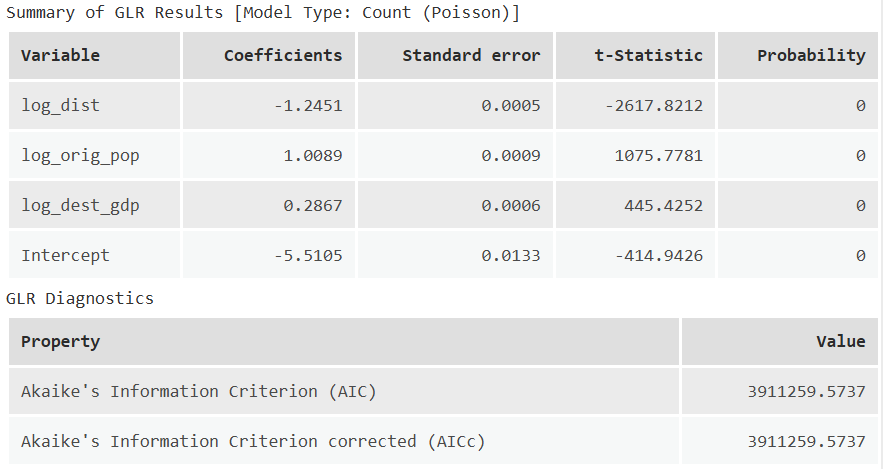
The important model statistics for our analysis are the
coefficients, which indicate the expected change in the dependent
variable (flow_int) for a corresponding one unit change in the
independent variable. For example, as log_dist increases by 1,
flow_int decreases by 1.2451 i.e., a negative relationship. By
comparison, as log_dest_gdp increases by 1, flow_int increases by
0.2867 i.e., a positive relationship.
We will use these coefficients as our values for our parameters \(k, μ, α\) and \(\beta\).
The output also includes the Akaike Information Criterion (AIC) which is a measure of model performance, calculated using:
\[AIC = 2k-2\log(L)\] This incorporates the model likelihood \(L\) which
we introduced above and the number of parameters in our model \(k\), which
in our case is four i.e., log_orig_pop, log_dest_gdp, log_dist and
the model intercept. While the tool doesn’t allow us to investigate \(L\) directly,
either for the final model or those evaluated during parameter testing,
it is a key component of model evaluation.
To use our coefficients, we are going to use the equation defined above:
\[λ_{ij} = \exp(\log(k) + μ\log(V_i) + α\log(W_j) - \beta\log(d_{ij}))\]
As we produced logged variables in advance (e.g.,
log_orig_pop) and used these in our Poisson regression, rather than
the raw data, we don’t need to log them again.
Our previous expression for an unconstrained model was
pow(!orig_pop!, 1) * pow(!dest_gdp!, 1) * pow(!NEAR_DIST! / 1000, -2),
using our initial set of parameters. We now have some tuned parameters
we can use instead i.e., \(k=-5.5105,μ=1.0089, α=0.2867,\beta=-1.2451\).
Return to the Attribute Table, and use Calculate Field to generate a new field
gm2i.e., our second gravity model (“Field Type” =Double). Try to implement the above equation, using the logged variables (e.g.,log_orig_pop) as the inputs and the model coefficients as our parameters. The Python functionexp()will need to be used.
Expression Solution
Here is the expected expression:math.exp(-5.105+(1.0089 * !orig_pop_log!)+(0.2867 * !dest_gdp_log!)-(abs(-1.2451) * !near_dist_log!))
When complete, predicted flows based upon our tuned gravity model gm2
should be available in the Attribute Table.
Create a Scatter Plot for
flow_intandgm2.
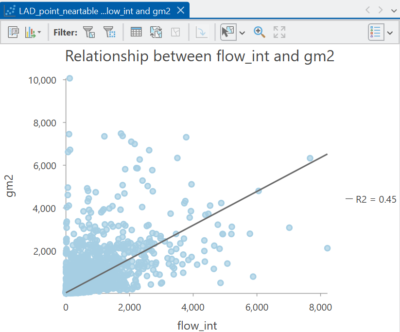
What is your appraisal of model performance, now that we have tuned our parameters \(k, μ, α\) and \(\beta\)?
Answer
Our model performance is now much improved, with \(R^2=0.45\) for the tuned model, compared to \(R^2=0.07\) for the initial total constrained model. In my view this is quite impressive: our model is capturing 45% of the variability in internal migration flows across England and Wales based on just three variables i.e., the distance between origins and destinations, and their corresponding emissiveness (population) and attractiveness (GDP).10.2.7 Gravity model variants
To finish the practical, we are going to introduce some additional variants of the gravity model, including origin-constrained, destination-constrained and doubly-constrained models, building on Wilson (1971).
We have already introduced the total-constrained model, which is scaled to ensure that the sum of all modelled flows equals the sum of all empirical flows. The other variants are defined as follows:
- An origin-constrained model60 is designed to constrain the total modelled flows from each origin to match the total empirical flows from each origin.
- A destination-constrained model61 is designed to constrain the total modelled flows to each destination to match the total empirical flows to each destination.
- A doubly-constrained model does both and is designed to constrain the total modelled flows from each origin AND to each destination to match the corresponding total empirical flows.
We can assess whether our model is constrained as follows:
Use “Summary Statistics” in the Attribute Table, with
orig_LAD2NMas the “Case Field”, calculating the sum forflow_intandgm2. Note we are using the integerflow_intfield here, rather than the decimalflow, as the former was used for model building.
Is our model origin-constrained?
Repeat this process for the destination local authority, using
dest_LAD2NM.
Is our model destination-constrained?
Answer
Our model is neither origin-constrained or destination-constrained. While our model has been tuned (for example using \(k\)) to make the observed data as likely as possible, the modelled totals for each origin or destination do not match the empirical totals.There are lots of situations where origin-constrained, destination-constrained and doubly-constrained models can be useful. For example an origin-constrained model might be suitable when the flows from the origin (emissions) are known and we therefore want our model to reproduce these. For example:
The government has data on the number of people leaving the country each year. What are their likely destination countries?
A destination-constrained model might be suitable when the flows to a destination (attractions) are known. For example:
The government has data on the number of people arriving in the country each year. What are their likely origin countries?
A doubly-constrained model might be suitable when both origin and destination flows are known, such as the ONS data we are using in this practical.
By keeping the total values fixed, we can investigate the distribution of flows. For example, if 20,000 people arrive in the Manchester local authority and 15,000 people leave, a doubly-constrained model would reproduce those total values. However, the distribution of the origins and destinations might differ from the observed distribution e.g., the modelled number of people leaving Manchester for Leeds might differ from the actual number of people. If so, these differences might help us to understand the factors which influence migration, such as the job market, the university sector, cultural drivers, among others, and in turn, develop better prediction models.
To finish the practical, we’ll show how these gravity model variants can be produced in ArcGIS.
10.2.8 Origin-constrained models
An origin-constrained model is defined as follows:
\[T_{ij} = A_{i}O_{i}W_j^αd_{ij}^{-\beta}\]
where \(O_i\) is the known total flow for origin \(i\), defined as:
\[O_{i}=\sum_{j}T_{ij}\]
and \(A_{i}\) is a balancing factor, which like the \(k\) parameter in our total-constrained model, is used to scale the modelled values to ensure the modelled total flow for each origin equals the known total flow \(O_{i}\):
\[A_{i} = \frac{1}{\sum_{j}W_j^αd_{ij}^{-\beta}}\]
Let’s illustrate this with a very simple example where there is a single origin \(M\) and three possible destinations \(X, Y, Z\). We know from government data that there are 1,000 people leaving origin \(M\), so \(O_{i}=1000\). Using our gravity model, we could estimate the relative pull to \(X\) and \(Y\) and \(Z\), incorporating both destination attractiveness \(W_j^α\) and distance \(d_{ij}^{-\beta}\). Let’s say this produces the following numeric values \(X=100,Y=50, Z=150\). At the moment, the sum of these values is \(300\) which does not equal our known flow from the origin \(O_{i}=1000\), so our model is not yet constrained to \(O_{i}\). Instead, these values represent the relative pull of each destination rather than than final predicted number of flows. To convert these to proportions, the denominator for \(A_{i}\) above calculates the sum for all destinations:
\[\sum_{j}W_j^αd_{ij}^{-\beta}=100+50+150=300\]
This enables us to the calculate the balancing factor:
\[A_{i}=\frac{1}{\sum_{j}W_j^αd_{ij}^{-\beta}}=\frac{1}{300}=0.00333\]
Putting this together, multiplying the balancing factor \(A_{i}\) by each modelled pull value \(W_j^αd_{ij}^{-\beta}\) is used to generate proportions e.g.,
\[X=0.00333 \times 100 = 0.333\] \[Y=0.00333 \times 50 = 0.167\] \[Z=0.00333 \times 150 = 0.500\]
These proportions can be multiplied by the known total \(O_{i}=1000\) to obtain the predicted flows:
\[T_{iX} =1000 \times 0.333 = 333\] \[T_{iY} =1000 \times 0.167 = 167\] \[T_{iZ} =1000 \times 0.500 = 500\]
Therefore:
\[333 + 167 + 500 = 1000 = O_i\]
This conceptual approach is reflected in our Poisson regression, which is described by the following model equation:
\[λ_{ij} = \exp(μ_{i}+ α\log(W_j) - \beta\log(d_{ij}))\]
We do not include a separate origin-emissiveness term \(μ\log(V_i)\) in the model, because in an origin-constrained model, the origin total\(O_{i}\) are fixed in advance.
The variable \(μ_{i}\) is a vector of origin-specific intercepts, which are represented in our model using categorical or dummy variables, which encode categories as either zeros or ones:
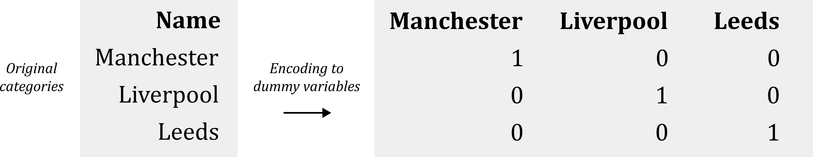
These dummy variables are included in our model in exactly the same way
as other variables (e.g., log_dest_gdp), and produce corresponding
coefficients, which are the regression equivalents of our balancing
factors \(A_{i}\).
We could produce these in ArcGIS using the Encode
Field
tool, for example creating dummy variables for orig_LAD21CD. In turn,
we could include those variables in our input for Generalized Linear
Regression.
Unfortunately, this only works effectively with a small number of
categories. In our case, there are 314 local authorities in our dataset
(Explore Statistics, Unique), thus requiring 314 dummy variables. It
would be impractical for us to load these manually to the GLR tool,
which is also not as flexible as other implementations, which can result
in multicollinearity issue with this number of variables.
Instead, we are going to use a Python
notebook,
which gives us access to Python functionality, all of the ArcGIS tools, many of which you will be familiar with e.g., numpy.
via
Arcpy,
and some common third-party libraries.
In Analysis → Geoprocessing, open a Python Notebook.
You will be not be writing any Python from scratch here (unlike Understanding GIS), but I will talk through each part of the code in turn so you understanding what is happening.
Once you are happy with your understanding, paste each code chunk into your Python notebook and run using the “play” button. If there are any errors, read the error messages and ask for help!
The first part imports the required libraries, which includes
numpy, pandas
and statsmodels, as
well as os for interacting with the operating system and accessing
directories and files:
import os
import arcpy
import numpy as np
import pandas as pd
import statsmodels.api as sm
import statsmodels.formula.api as smfThe next part creates an object aprx which is connected to the current
ArcGIS project, and then extracts the first [0] (and only) map as m.
We should now have access to the map layers:
# Current ArcGIS project and return the
aprx = arcpy.mp.ArcGISProject("CURRENT")
m = aprx.listMaps()[0]You can run the code using the “play” button, and if successful, the
code blocks will switch from [*] to [#] to denote completion, without
errors or warnings:
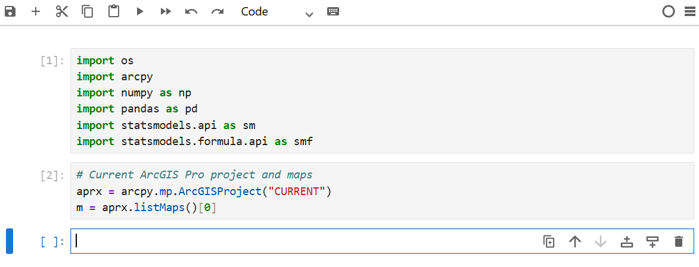
We can access the map layers available in m, and here we are
interested in the Near Table LAD_point_neartable, which contains all of the fields we’ve
been using for modelling. This is converted to a Pandas dataframe for
easier analysis:
# Access near table
table = m.listTables("LAD_point_neartable")[0]
table_path = table.dataSource
workspace = arcpy.Describe(table_path)
# List of fields
fields = [f.name for f in arcpy.ListFields(table_path)]
# Convert to pandas dataframe
rows = arcpy.da.SearchCursor(table_path, fields)
df = pd.DataFrame(list(rows), columns=fields)We can inspect the data using head():
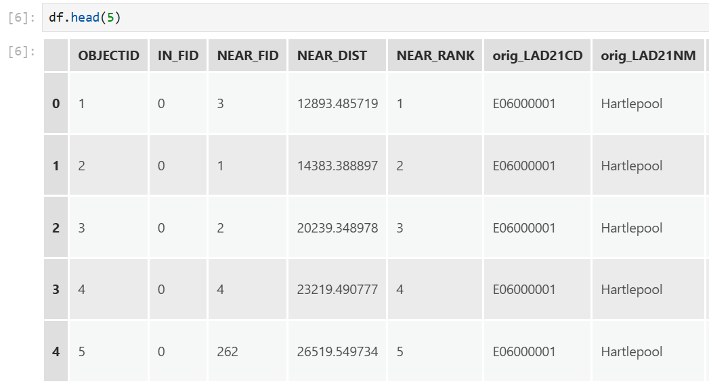
Our next step is to define our model formula, including our dependent and independent variables. This was managed for us in the Generalized Linear Regression tool, but here we specify that manually:
Here we are specifying that flow_int is our dependent variable, and this
is modelled (~) as a function of the distance between origins and destinations
log_dist, the destination GDP log_dest_gdp, and dummy variables for
the origin name C(orig_LAD21CD). The C
operator
in statsmodels indicates we want to treat that variable as
“categorical”, thereby creating a dummy variables for each origin.
The final component is-1 which removes the model intercept. When an intercept is included, one category must normally be omitted and treated as a reference category. For example, if there were three origins \(A,B,C\), a typical model would estimate an intercept together with coefficients for \(B\) and \(C\), which are interpreted relative to \(A\). This is necessary to avoid the dummy variable trap, whereby there is perfect multicollinearity between the intercept term in a model and the dummy variables62. To avoid this, we remove the intercept using -1, allowing the model to estimate a separate coefficient for every origin (in orig_LAD21CD), which represent their own baseline effect, rather than measuring relative to an arbitrary baseline category.
We can now use this formula as an input to a Poisson regression model implemented via the smf.glm function,
using the following code:
# Fit a model, using the specified formula and data, and using a Poisson approach
model = smf.glm(formula=model_formula, data=df, family=sm.families.Poisson()).fit()If successful, print(model.summary()) can be used to evaluate the
model results:
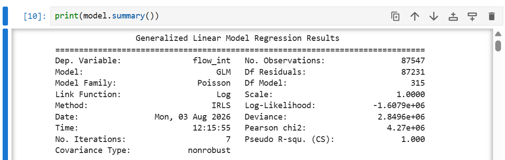
Scrolling down also reveals the coefficients coef for each dummy variable
\(μ_{i}\), which are used to scale the model predictions to match the
empirical origin flows:
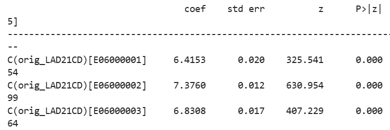
We can use our model to generate predictions of flow for each row of
data, as we did for gm1 and gm2. This uses the explanatory
(independent) variables stored in df, and stores the values in the
df dataframe in the gm3 field i.e., our third gravity model.
You can inspect some of the predicted values by running df.gm3:
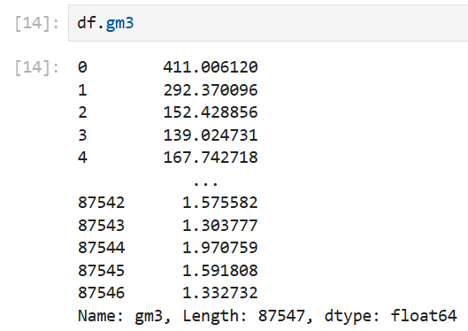
Our final step is to export our dataframe to a .csv, which will allow
us to investigate the outputs further in ArcGIS. The code below
specifies our file name, and updates the path to the directory of our
project, as stored in aprx.homeFolder:
# Set output file path (Project directory) and file name
output = os.path.join(aprx.homeFolder, "LAD_point_neartable_pred_origconst.csv")
# Export
df.to_csv(output, index=False)If successful, the output file should be present in the project directory:
We can now evaluate the results of our origin-constrained model.
Load
LAD_point_neartable_pred_origconst.csvto ArcGIS.
How could you test whether our model is origin-constrained?
Answer
As before, this could be achieved using “Summarize”, comparing the sum offlow_int and gm3, using orig_LAD21NM as the case field.
Unfortunately, this is one of those examples where this functionality is
unavailable for a standalone table (.csv). To achieve this, we’d need
to export our table to the project geodatabase.
Next create a Scatter Chart showing the relationship between
flow_intandgm3.
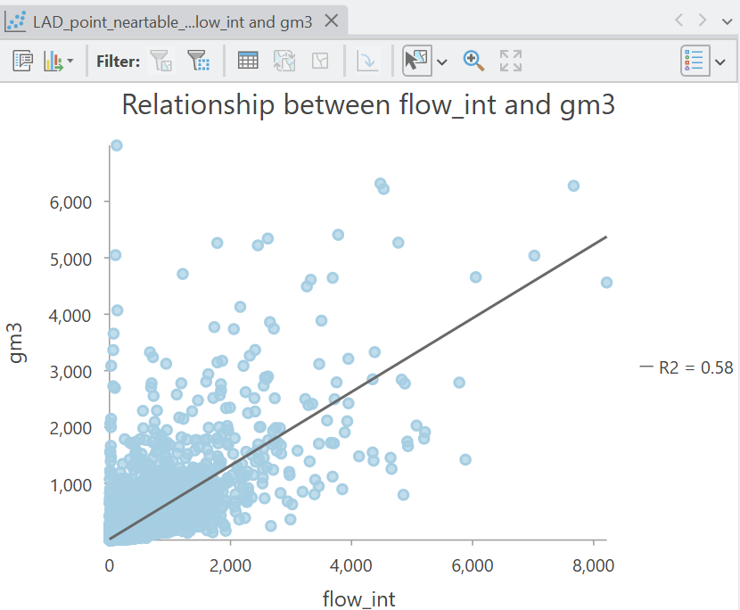
What is your appraisal of the origin-constrained model performance?
Answer
Our model performance has been improved by constraining the model estimates to fit the known origin totals (\(R^2=0.58\)).10.2.9 Destination-contrained models
The destination-constrained model is conceptually very similar to the origin-constrained model, except this time we are constraining to match the total flows to each destination, rather than from each origin. This is achieved by removing destination-attractiveness \(α\log(W_j)\) from the model, because in a destination-constrained model, the destination flows are already completely represented by another parameter63:
\[λ_{ij} = \exp(μ\log(V_i)+ α_{i}- \beta\log(d_{ij}))\]
The variable \(α_{i}\) is a vector of destination-specific intercepts, which as before are represented in our model using dummy variables, this time encoded based on the destination local authority names.
The origin-constrained formula used in
statsmodelswas as follows:model_formula = "flow_int ~ C(orig_LAD21CD) + log_dest_gdp + log_dist - 1". Can you modify this to produce a destination-constrained model formula?
Adapt the formula and re-run the code to produce a new set of predictions for our fourth gravity model
gm4, storing in your project directory asLAD_point_neartable_pred_destconst.csv.
Load the file to ArcGIS, and evalute the predictions using a scatter plot.
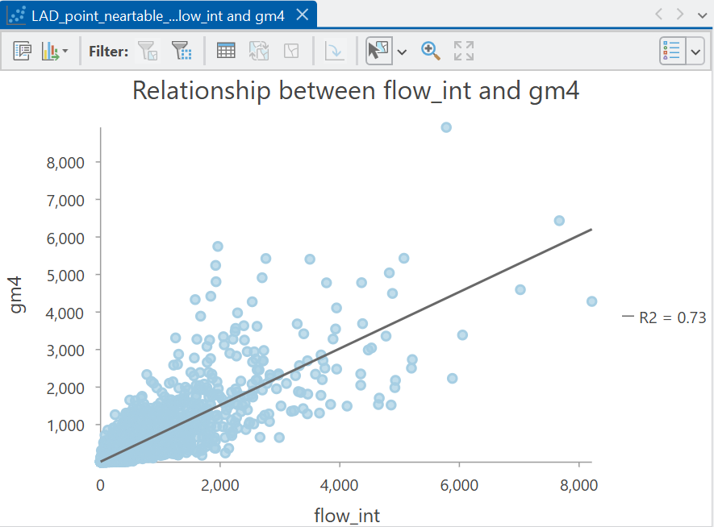
How has model performance changed?
10.2.10 Doubly-constrained models
Our final model variant is the doubly-constrained model which is designed to constrain the total modelled flows from each origin AND to each destination to match the corresponding total empirical origin-destination flows. This is defined as:
\[T_{ij} = A_{i}O_{i}B_{j}D_{j}d_{ij}^{-\beta}\]
where \(O_{i}\) is the known total flow for origin \(i\) and \(D_j\) is the known total flow for destination \(j\). The challenging part is working out the balancing factors \(A_{i}\) and \(B_{j}\), which are used to ensure the total modelled flows for each origin and destination match the total known flows.
This is challenging because \(A_{i}\) is defined as:
\[A_{i} = \frac{1}{\sum_{j}B_jD_jd_{ij}^{-\beta}}\]
i.e., the denominator is the sum of the modelled attractiveness for all destinations \(j\) for origin \(i\). This incorporates the distance effect \(d_{ij}\), the destination attributes \(D_j\) and the destination balancing factor \(B_j\).
However, \(B_{j}\) is defined as:
\[B_{j} = \frac{1}{\sum_{i}A_iO_id_{ij}^{-\beta}}\]
The challenge is that \(A_i\) is needed to calculate \(B_j\), but \(B_j\) is needed to calculate \(A_i\), and so on. We won’t go into depth about how this conundrum is solved, except that it is solved iteratively, beginning with a starting value and calculating \(A_{i}\) and \(B_{j}\) in turn until the values stabilise64.
Our Poisson regression model is similar to the previous models but here we have no variables for modelling emissiveness (\(V_i^μ\)) or attractiveness (\(W_j^α\)), as both total origin flows and total destination flows are constrained in the model, using the \(μ_{i}\) and \(α_{i}\) dummy variables:
\[λ_{ij} = \exp(μ_{i}+ α_{i}- \beta\log(d_{ij}))\]
The formula for a doubly-constrained model is as follows:
model_formula = "flow_int ~ C(orig_LAD21CD) + C(dest_LAD21CD) + log_dist". Re-run the code to produce a new set of predictions for our fifth (and final) gravity modelgm5, storing in your project directory asLAD_point_neartable_pred_doublyconst.csv.
Load the file to ArcGIS, and evalute the predictions using a scatter plot.
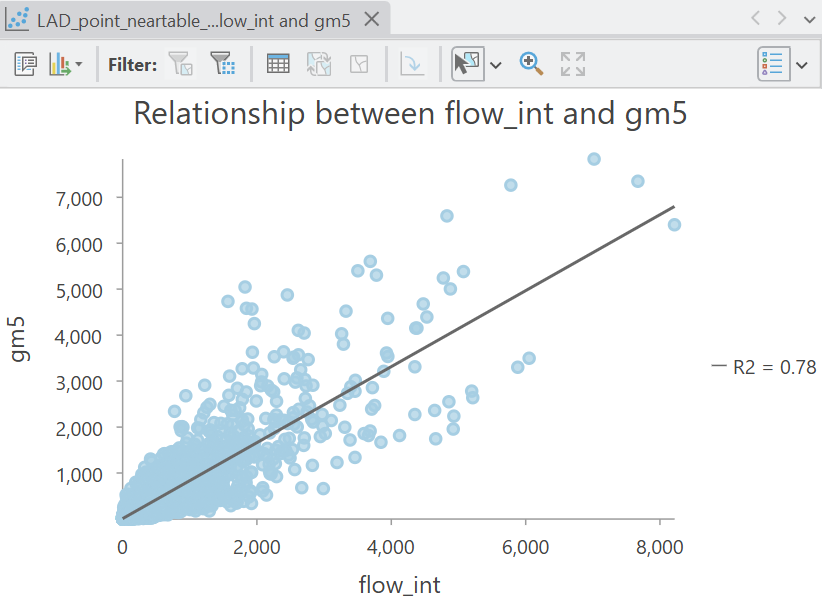
Constraining our modelled origin and destination flows has improved model performance further (\(R^2=0.78\)), indicating that the model has captured nearly 80% of the variability in internal migrations, when total origin-destination flows are constrained.
There is clearly some uncaptured variability (~22%), and evidence of under- and over-prediction of flow. However, this approach provides a baseline for further analysis i.e., what additional factors could we incorporate to capture that additional variability?
We could use our model as a basis for prediction e.g., modifying the local authority populations or GDPs to investigate how flows might change in future.
To finish:
Export the
.csvto the project geodatabase (to enable editing), use Select by Attributes to select rows where the destination is a local authority of your choice (e.g., Manchester =E08000003), and use XY to Line to generate lines connecting the origin and destination centroids, selecting the appropriate CRS and making sure to “Preserve attributes”.
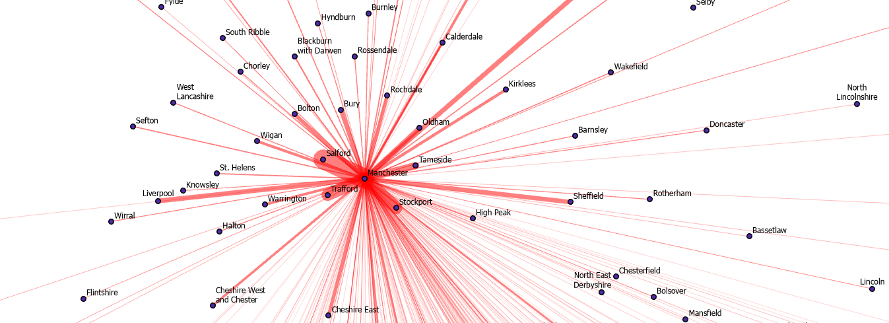
gm5How well does the modelled flow to Manchester match your understanding of actual internal migration?
Our models are also based on a simple set of predictors, but you could of course include a much wider range e.g., median earnings rather than GDP per capita, unemployment rate, housing affordability, or the share of working-age population. There are also a host of individual-level factors that drive migration e.g., family connections.
If applying this model to international migration, we might include a completely different set of predictors e.g., cultural similarity, as covered in Practical 2, whether countries share a common language, or the degree of conflict within or between countries.
Congratulations! You have completed the practical and should now be familiar with the conceptual and mathematical background to spatial interaction modelling, and be able to implement them in ArcGIS.
10.3 Extra
There is no extra content this week. This is the end of challenging but hopefully rewarding semester, so use your time to focus on the assessments or take a well earned break!
10.4 Resources
- Wilson, A.G. (1971). A family of spatial interaction models, and associated developments. Environment and Planning A, 3(1), pp.1-32.
- Haynes, K.E., & Fotheringham, A.S. (1985). Gravity and Spatial Interaction Models. Reprint. Edited by Grant Ian Thrall. WVU Research Repository, 2020.
- Fotheringham, A.S. and M.E. O’Kelly (1989) Spatial Interaction Models: Formulations and Applications. London: Kluwer Academic.
- Dennett, A. and Wilson, A. (2013). A multilevel spatial interaction modelling framework for estimating interregional migration in Europe. Environment and Planning A, 45(6), pp.1491-1507.
- Rowe, F., Lovelace, R. and Dennett, A. (2024). Spatial interaction modelling: a manifesto. In A research agenda for spatial analysis (pp. 177-196). Edward Elgar Publishing.
- Liao, M. and Oshan, T.M. (2025). A Data‐Driven Approach to Spatial Interaction Models of Migration: Integrating and Refining the Theories of Competing Destinations and Intervening Opportunities. Geographical Analysis, 57(3), pp.540-554.